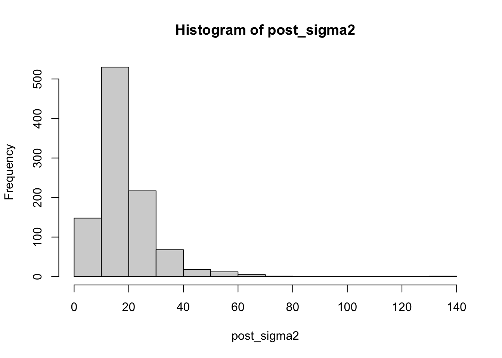
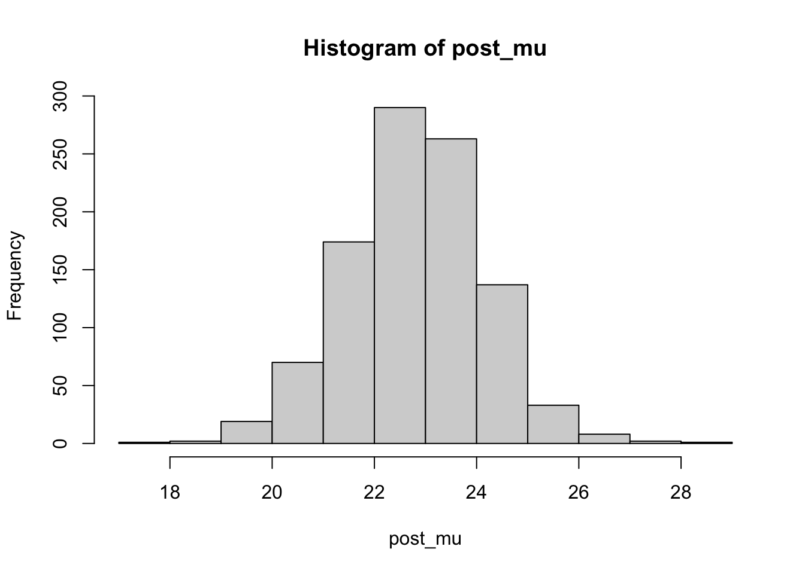
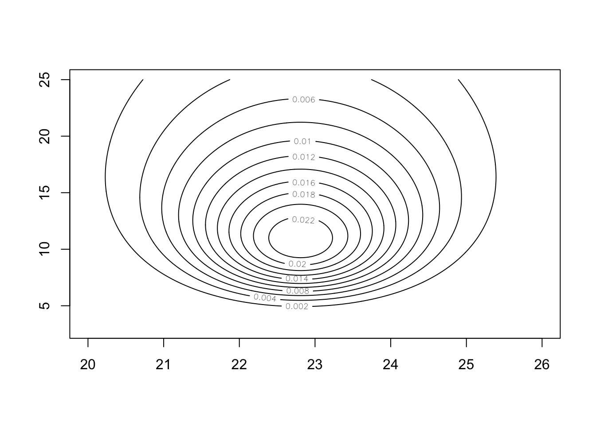
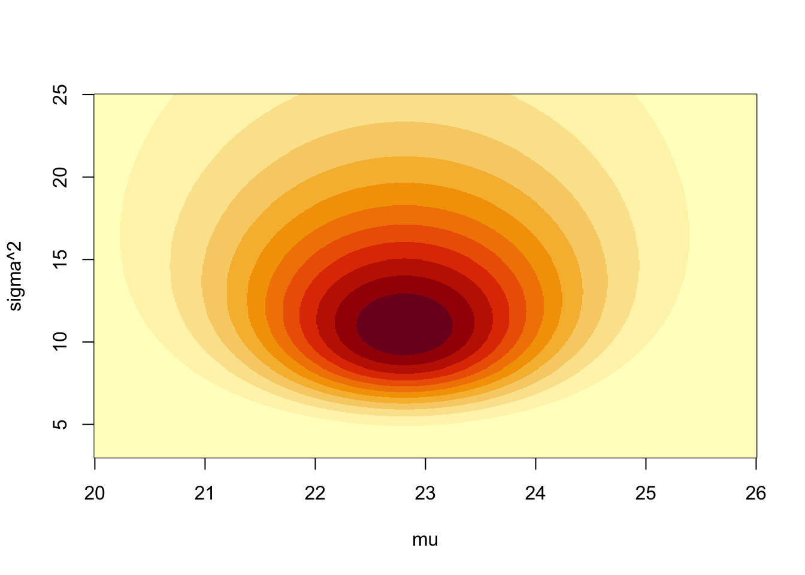
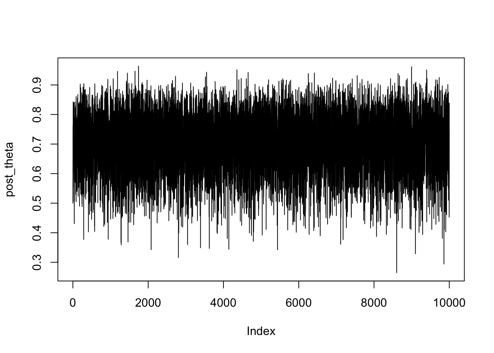
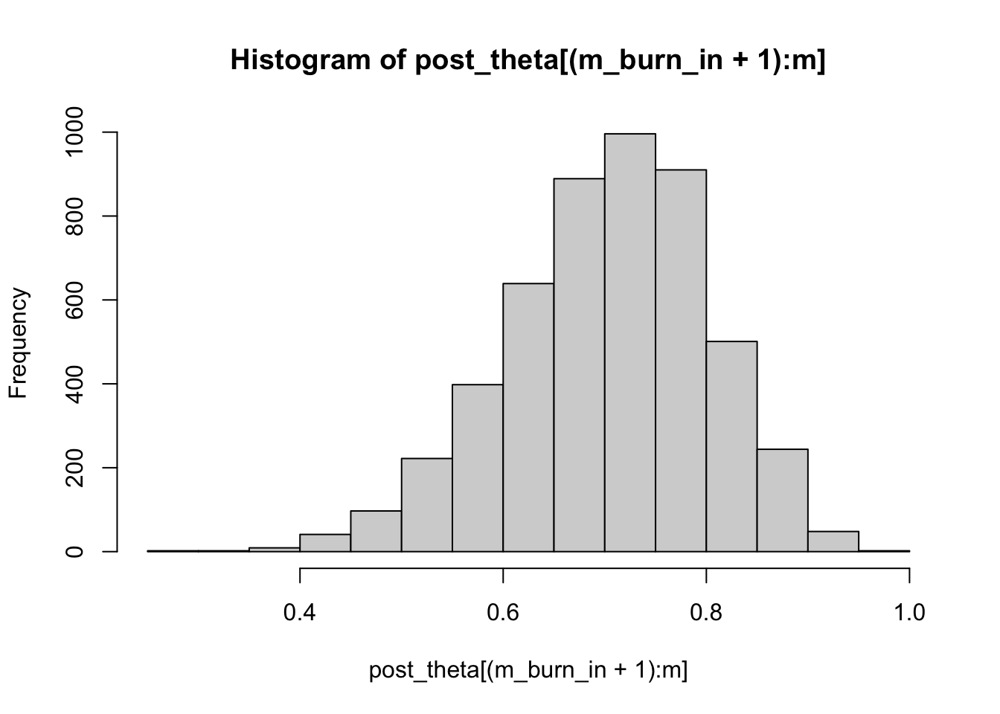
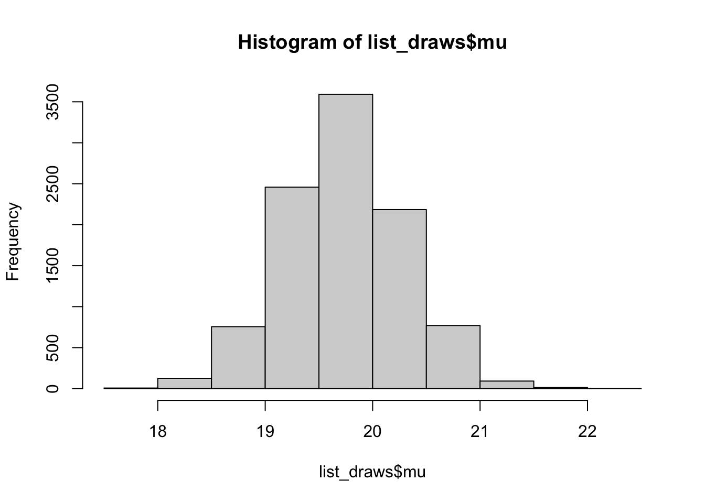
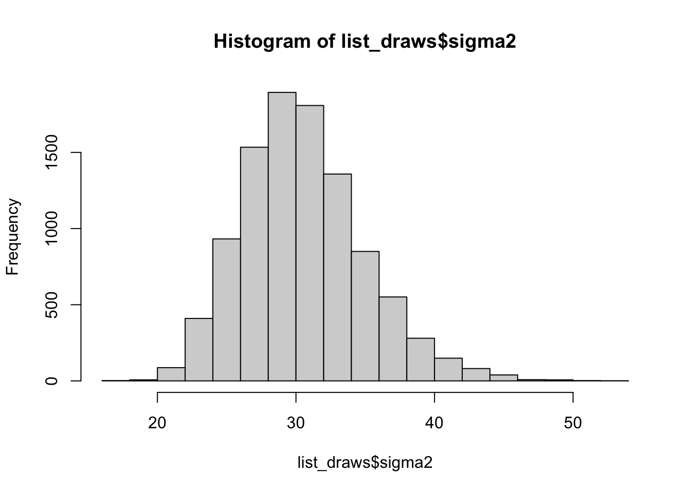
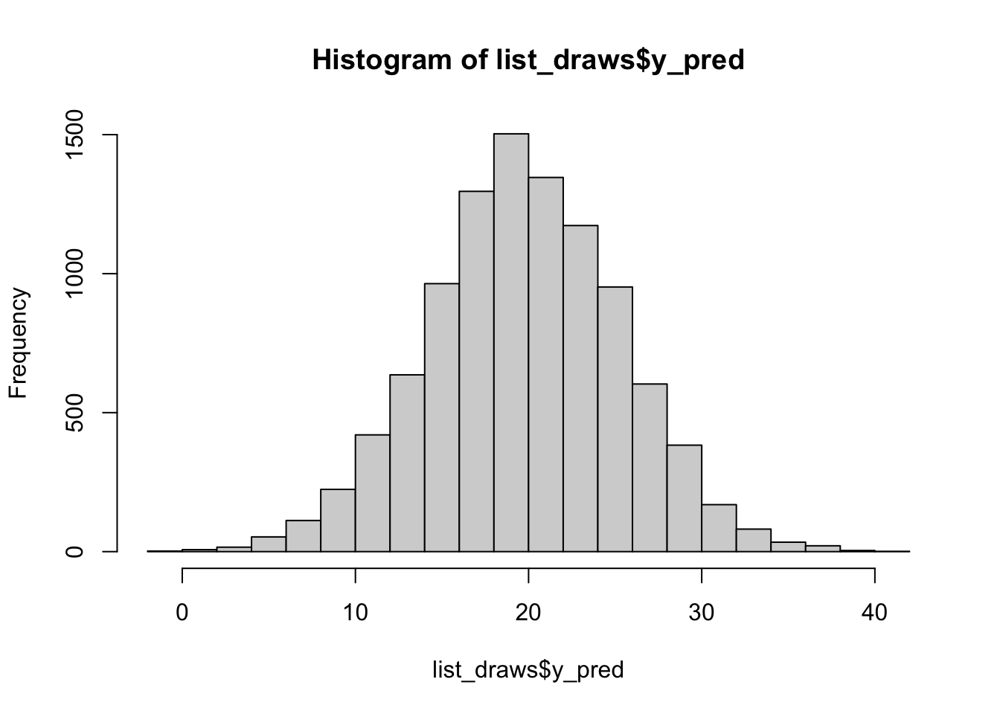

Notes
Lab 1
Normal models with unknown mean and variance
- Data:
\[ Y_1, \ldots, Y_n \overset{iid}\sim N(\mu,\sigma^2) \]
\[ p(\mathbf{y} \mid \mu, \sigma^2) \propto (\sigma^2)^{-n/2} \exp\left(-\frac{\sum_{i=1}^n (Y_i - \mu)^2}{2\sigma^2}\right) \]
- Here are the BMI measurements of patients in one clinic:
What if we use noninformative priors?
-
Prior:
\[ p(\mu,\sigma^2) \propto \frac{1}{\sigma^2} \]
-
Posteriors:
-
Conditional posterior of \(\mu\) given \(\sigma^2\) and \(\mathbf{y}\):
\[ \mu \mid \sigma^2, \mathbf{y} \sim \text{N}\left(\bar{y}, \frac{\sigma^2}{n}\right) \]
-
Marginal posterior of \(\sigma^2\) given \(\mathbf{y}\):
\[ \sigma^2 \mid \mathbf{y} \sim \text{Inv-Gamma}\left(\frac{n-1}{2}, \frac{(n-1)s^2}{2}\right) \]
-
-
Simulation takes two steps:
Simulation of \(\sigma^2\) from the inverse gamma distribution (note that an inverse gamma random variable can be expressed as the reciprocal of a gamma random variable with the same shape and rate parameters. Alternatively, you can use
invgamma::rigamma()).Simulation of \(\mu\) from the normal distribution
# initialize items
m <- 1000
# sample from marginal posterior for sigma^2 given y
post_sigma2 <- 1 / rgamma(n = m, shape = (n - 1) / 2, rate = (n - 1) * s2 / 2)
# sample from conditional posterior for mu given sigma^2 and y
post_mu <- rnorm(n = m, mean = y_bar, sd = sqrt(post_sigma2 / n))
# plot the distributions
hist(post_sigma2)
hist(post_mu)
# point estimates
c("med sigma2" = median(post_sigma2), "mean sigma2" = mean(post_sigma2), "med mu" = median(post_mu), "mean mu" = mean(post_mu)) med sigma2 mean sigma2 med mu mean mu
15.94766 18.57607 22.80773 22.78841 2.5% 97.5%
6.761929 46.532353 2.5% 97.5%
20.05516 25.35953 # 95% HPD interval estimates
TeachingDemos::emp.hpd(post_sigma2)[1] 3.862449 37.871385TeachingDemos::emp.hpd(post_mu)[1] 17.76543 24.91280Now we can plot the joint posterior density for \(\mu\) and \(\sigma^2\).
# initialize items
# -> values of parameters for which you want to draw the plot with
# -> results holder
x_mu <- seq(from = 20, to = 26, length = 600)
x_sigma2 <- seq(from = 3, to = 25, length = 600)
post_joint <- matrix(data = 0, nrow = 600, ncol = 600)
# calculate joint posterior density
for (i in 1:600) {
# -> P(mu, sigma^2 | y) = P(mu | sigma^2, y) * P(sigma^2 | y)
post_joint[,i] = invgamma::dinvgamma(x = x_sigma2[i], shape = (n - 1) / 2, rate = (n - 1) * s2 / 2) * dnorm(x = x_mu, mean = y_bar, sd = sqrt(x_sigma2[i] / n))
}
# draw plots
contour(x = x_mu, y = x_sigma2, z = post_joint)
image(x = x_mu, y = x_sigma2, z = post_joint, xlab = "mu", ylab = "sigma^2")
# NOT RUN
persp(x = x_mu, y = x_sigma2, z = post_joint, xlab = "mu", ylab = "sigma^2")What if we use conjugate priors?
-
Prior:
-
Marginal prior of \(\sigma^2\):
\[ \sigma^2 \sim \text{Inv-Gamma}(\alpha,\beta) \]
-
Conditional prior of \(\mu\) given \(\sigma^2\):
\[ \mu \mid \sigma^2 \sim N\left(\mu_0, \frac{\sigma^2}{\kappa_0}\right), \]
where \(\kappa\) reflects our confidence in the prior.
-
-
Posteriors:
-
Conditional posterior of \(\mu\) given \(\sigma^2\) and \(\mathbf{y}\):
\[ \mu \mid \sigma^2,\mathbf{y} \sim \text{N}(\mu_n,\sigma_n^2), \]
where \(\mu_n = \frac{n\bar{y} + \kappa_0 \mu_0}{n + \kappa_0}, \quad \sigma_n^2 = \frac{\sigma^2}{n + \kappa_0}\)
-
Marginal posterior of \(\sigma^2\) given \(\mathbf{y}\):
\[ \sigma^2 \mid \mathbf{y} \sim \text{Inv-Gamma}\left( \frac{n}{2}+\alpha, \frac{(n-1)s^2}{2}+\frac{n\kappa_0}{2(n+\kappa_0)}(\mu_0-\bar{y})^2+\beta\right) \]
-
Use the same two-step process to simulate from the posterior distribution using \(µ_0 = 20\), \(\kappa_0 = 0.01\), \(\alpha = 0.1\) and \(\beta = 10\). Report the marginal posterior median, mean, credible intervals for \(\mu\) and \(\sigma^2\). Draw the posterior distribution of \((\mu,\sigma^2)\).
# initialize items
m <- 1000
alpha_0 <- 0.1
beta <- 10
mu_0 <- 20
k_0 <- 0.01
# sample from marginal posterior for sigma^2 given y
alpha_post <- n / 2 + alpha_0
beta_post <- (n - 1) * s2 / 2 + n * k_0 / (2 * (k_0 + n)) * (mu_0 - y_bar)^2 + beta
post_sigma2_conj <- invgamma::rinvgamma(n = m, shape = alpha_post, rate = beta_post)
# calculate posterior distribution mean
mu_n <- (n * y_bar + k_0 * mu_0) / (n + k_0)
# sample from conditional posterior for mu given sigma^2 and y
post_mu_conj <- rnorm(n = m, mean = mu_n, sd = sqrt(post_sigma2_conj / (n + k_0)))
# point estimates
c("med sigma2" = median(post_sigma2_conj), "mean sigma2" = mean(post_sigma2_conj), "med mu" = median(post_mu_conj), "mean mu" = mean(post_mu_conj)) med sigma2 mean sigma2 med mu mean mu
15.66297 18.63240 22.84735 22.84873 2.5% 97.5%
7.476552 47.771557 2.5% 97.5%
20.15292 25.80821 # 95% HPD interval estimates
TeachingDemos::emp.hpd(post_sigma2_conj, conf = 0.95)[1] 4.995619 39.516899TeachingDemos::emp.hpd(post_mu_conj, conf = 0.95)[1] 17.35473 25.15766# initialize items
# -> values of parameters for which you want to draw the plot with
# -> results holder
x_mu <- seq(from = 20, to = 26, length = 600)
x_sigma2 <- seq(from = 3, to = 25, length = 600)
post_joint_conj <- matrix(data = 0, nrow = 600, ncol = 600)
# calculate joint posterior density
for (i in 1:600) {
# -> P(mu, sigma^2 | y) = P(mu | sigma^2, y) * P(sigma^2 | y)
post_joint_conj[,i] = invgamma::dinvgamma(x = x_sigma2[i], shape = alpha_post, rate = beta_post) * dnorm(x = x_mu, mean = y_bar, sd = sqrt(x_sigma2[i] / n))
}
# draw plot
contour(x = x_mu, y = x_sigma2, z = post_joint_conj)
Multinomial models with conjugate priors
Setup
Experiment:
- Fixed number of \(n\) trials.
- Each trial is an independent event.
- The same \(J\) outcomes are possible in each trial.
- Probability of each outcome to occur is constant for each trial.
- The multivariate response \(Y\) equals the number of different outcomes among these trials.
Example:
30 aircrafts that have been in service for 10 years were examined in a safety test. Among them,
- 19 have no wing cracks (Status 1)
- 9 have detectable wing cracks (Status 2)
- 2 have critical wing cracks (Status 3)
data_aircraft <- c(1,3,1,1,1,1,1,1,1,1,2,1,1,1,2,2,2,2,2,1,2,3,2,1,1,1,1,2,1,1)
table(data_aircraft)data_aircraft
1 2 3
19 9 2 # save summary data
y <- as.numeric(table(data_aircraft))Could you estimate the probability of aircrafts having status 1, 2 and 3 after serving for 10 years?
- Data: \(Y_1, \ldots, Y_J \sim \text{Multinomial}(n,\theta_1,\ldots,\theta_J) \quad \text{where } n = Y_1 + \ldots + Y_n,n=30,J=3\)
- Conjugate prior: \((\theta_1,\ldots,\theta_J) \sim \text{Dirichlet}(\alpha_1,\ldots,\alpha_J)\)
How can we implement the Bayesian model to obtain the posterior samples of \(\theta_1,\ldots,\theta_J\)?
One prior
Just using some selected values for \(\mathbf{\alpha} = (3,2,1)\).
IMPORTANT NOTE: Because of the conjugate prior, we know that the posteriors for \(\mathbf{\theta}\) will also follow Dirichlet distribution, just with updated parameters.
# set prior parameters
alphas <- c(3,2,1)
# calculate posterior parameters
post_params <- y + alphas
# calculate exact posterior mean for each of theta1, theta2, theta3
(post_theta_means <- post_params / sum(post_params))[1] 0.61111111 0.30555556 0.08333333# Monte Carlo simulation
post_thetas <- gtools::rdirichlet(n = 10000, alpha = post_params)
# approximate posterior means for each of theta1, theta2, theta3
post_thetas %>%
data.frame %>%
map_dbl(\(col) mean(col)) X1 X2 X3
0.61100393 0.30589190 0.08310417 # approximate posterior medians and 95% credible intervals for each of theta1, theta2, theta3
post_thetas %>%
data.frame %>%
map(\(col) quantile(col, probs = c(0.025,0.50,0.975)))$X1
2.5% 50% 97.5%
0.4483401 0.6128376 0.7602419
$X2
2.5% 50% 97.5%
0.1696681 0.3017708 0.4642477
$X3
2.5% 50% 97.5%
0.01853695 0.07501721 0.19534097 Uniform prior
# set prior parameters
alphas_unif <- c(1,1,1)
# calculate posterior parameters
post_params_unif <- y + alphas
# calculate exact posterior mean for each of theta1, theta2, theta3
(post_theta_means_unif <- post_params_unif / sum(post_params_unif))[1] 0.61111111 0.30555556 0.08333333# Monte Carlo simulation
post_thetas_unif <- gtools::rdirichlet(n = 10000, alpha = post_params_unif)
# approximate posterior means for each of theta1, theta2, theta3
post_thetas_unif %>%
data.frame %>%
map_dbl(\(col) mean(col)) X1 X2 X3
0.61228919 0.30510750 0.08260331 # approximate posterior medians and 95% credible intervals for each of theta1, theta2, theta3
post_thetas_unif %>%
data.frame %>%
map(\(col) quantile(col, probs = c(0.025,0.50,0.975)))$X1
2.5% 50% 97.5%
0.4511231 0.6134111 0.7640884
$X2
2.5% 50% 97.5%
0.1704594 0.3014173 0.4590326
$X3
2.5% 50% 97.5%
0.01784236 0.07464198 0.19346750 Strong prior
# set prior parameters
# NOTE: increasing alpha's in prior distribution gives stronger prior input
alphas_strong <- c(1,1,1)
# calculate posterior parameters
post_params_strong <- y + alphas
# calculate exact posterior mean for each of theta1, theta2, theta3
(post_theta_means_strong <- post_params_strong / sum(post_params_strong))[1] 0.61111111 0.30555556 0.08333333# Monte Carlo simulation
post_thetas_strong <- gtools::rdirichlet(n = 10000, alpha = post_params_strong)
# approximate posterior means for each of theta1, theta2, theta3
post_thetas_strong %>%
data.frame %>%
map_dbl(\(col) mean(col)) X1 X2 X3
0.61015947 0.30585902 0.08398151 # approximate posterior medians and 95% credible intervals for each of theta1, theta2, theta3
post_thetas_strong %>%
data.frame %>%
map(\(col) quantile(col, probs = c(0.025,0.50,0.975)))$X1
2.5% 50% 97.5%
0.4478625 0.6121613 0.7573289
$X2
2.5% 50% 97.5%
0.1706946 0.3017097 0.4638871
$X3
2.5% 50% 97.5%
0.01845178 0.07660987 0.19014179 Lab 2
The coin example
Experiment; Suppose that a coin is tossed 20 times, but Chloe only recorded the first 19 outcomes: \(\{1,1,1,1,1,0,1,1,1,1,0,1,1,0,1,1,0,0,1\}\)
-
Data:
- \(X_1, X_2, \ldots, X_{19}\) taking on values of 1 (head) or 0 (tail), \(X_{20}\) is missing.
- \(X_i \sim \text{Bernoulli}(\theta)\)
Parameter of interest: \(\theta\).
We can use Gibbs sampler to find posterior distribution of both \(\theta\) and \(X_{20}\)!
# obsersved data
# Observed data
x <- c(1,1,1,1,1,0,1,1,1,1,0,1,1,0,1,1,0,0,1)
y <- sum(x)
# initialize items
m <- 10000
m_burn_in <- 5000
post_theta <- c()
post_x20 <- c()
# Gibbs sampler!
# -> set initial values of p and X20
post_theta[1] <- 0.5
post_x20[1] <- 1
# add values to the chain
for (i in 2:m){
# derived in previous notes
post_theta[i] <- rbeta(n = 1, shape1 = y + post_x20[i-1], shape2 = 20 - y - post_x20[i-1] + 1)
post_x20[i] <- rbinom(n = 1, size = 1, prob = post_theta[i])
}
# time series plot of the Markov Chain path for "p"
plot(post_theta, type = 'l')
# display and summarize kept values
hist(post_theta[(m_burn_in + 1):m])
mean(post_theta[(m_burn_in + 1):m])[1] 0.7027235sd(post_theta[(m_burn_in + 1):m])[1] 0.09963216table(post_x20[(m_burn_in + 1):m])
0 1
1437 3563 Normal models with noninformative priors
Consider a normal models with noninformative priors. \(Y_1, \ldots, Y_n \sim \text{N}(\mu, \sigma^2)\). The data set is simulated from the below code.
y <- rnorm(100,20, 5)Use Rstan to build the model and obtain the posterior distribution of \(\mu\) and \(\sigma^2\). Draw histograms for each parameter. Obtain the posterior predictive distribution for a future observation. Draw a histogram.
data {
int<lower=0> n;
real y[n];
}
parameters {
real mu;
real<lower=0> sigma2;
}
model {
y ~ normal(mu, sqrt(sigma2));
target += -log(sigma2);
}
generated quantities {
real y_pred;
y_pred = normal_rng(mu, sqrt(sigma2));
}# specify stand code
stan_code <- "
data {
int<lower=0> n;
real y[n];
}
parameters {
real mu;
real<lower=0> sigma2;
}
model {
y ~ normal(mu, sqrt(sigma2));
target += -log(sigma2);
}
generated quantities {
real y_pred;
y_pred = normal_rng(mu, sqrt(sigma2));
}
"
# save model, provide data and run
stan_mod <- rstan::stan_model(model_code = stan_code)
data_stan <- list(n = length(y),
y = y)
stan_fit <- rstan::sampling(object = stan_mod, data = data_stan,
seed = 1, chains = 2, warmup = 5000, iter = 10000)
SAMPLING FOR MODEL 'anon_model' NOW (CHAIN 1).
Chain 1:
Chain 1: Gradient evaluation took 4e-06 seconds
Chain 1: 1000 transitions using 10 leapfrog steps per transition would take 0.04 seconds.
Chain 1: Adjust your expectations accordingly!
Chain 1:
Chain 1:
Chain 1: Iteration: 1 / 10000 [ 0%] (Warmup)
Chain 1: Iteration: 1000 / 10000 [ 10%] (Warmup)
Chain 1: Iteration: 2000 / 10000 [ 20%] (Warmup)
Chain 1: Iteration: 3000 / 10000 [ 30%] (Warmup)
Chain 1: Iteration: 4000 / 10000 [ 40%] (Warmup)
Chain 1: Iteration: 5000 / 10000 [ 50%] (Warmup)
Chain 1: Iteration: 5001 / 10000 [ 50%] (Sampling)
Chain 1: Iteration: 6000 / 10000 [ 60%] (Sampling)
Chain 1: Iteration: 7000 / 10000 [ 70%] (Sampling)
Chain 1: Iteration: 8000 / 10000 [ 80%] (Sampling)
Chain 1: Iteration: 9000 / 10000 [ 90%] (Sampling)
Chain 1: Iteration: 10000 / 10000 [100%] (Sampling)
Chain 1:
Chain 1: Elapsed Time: 0.018 seconds (Warm-up)
Chain 1: 0.024 seconds (Sampling)
Chain 1: 0.042 seconds (Total)
Chain 1:
SAMPLING FOR MODEL 'anon_model' NOW (CHAIN 2).
Chain 2:
Chain 2: Gradient evaluation took 0 seconds
Chain 2: 1000 transitions using 10 leapfrog steps per transition would take 0 seconds.
Chain 2: Adjust your expectations accordingly!
Chain 2:
Chain 2:
Chain 2: Iteration: 1 / 10000 [ 0%] (Warmup)
Chain 2: Iteration: 1000 / 10000 [ 10%] (Warmup)
Chain 2: Iteration: 2000 / 10000 [ 20%] (Warmup)
Chain 2: Iteration: 3000 / 10000 [ 30%] (Warmup)
Chain 2: Iteration: 4000 / 10000 [ 40%] (Warmup)
Chain 2: Iteration: 5000 / 10000 [ 50%] (Warmup)
Chain 2: Iteration: 5001 / 10000 [ 50%] (Sampling)
Chain 2: Iteration: 6000 / 10000 [ 60%] (Sampling)
Chain 2: Iteration: 7000 / 10000 [ 70%] (Sampling)
Chain 2: Iteration: 8000 / 10000 [ 80%] (Sampling)
Chain 2: Iteration: 9000 / 10000 [ 90%] (Sampling)
Chain 2: Iteration: 10000 / 10000 [100%] (Sampling)
Chain 2:
Chain 2: Elapsed Time: 0.018 seconds (Warm-up)
Chain 2: 0.018 seconds (Sampling)
Chain 2: 0.036 seconds (Total)
Chain 2: # view results
rstan::summary(stan_fit)$summary
mean se_mean sd 2.5% 25% 50%
mu 19.73393 0.006319297 0.5523734 18.650200 19.37158 19.72306
sigma2 30.52332 0.050402780 4.3833855 22.945229 27.43350 30.13206
y_pred 19.75268 0.056683279 5.5769600 8.619882 16.09761 19.70749
lp__ -220.38845 0.015072756 0.9973570 -222.997665 -220.77024 -220.08196
75% 97.5% n_eff Rhat
mu 20.09754 20.81860 7640.607 1.0004561
sigma2 33.13760 40.40909 7563.283 1.0001552
y_pred 23.52321 30.50344 9680.218 0.9999114
lp__ -219.67411 -219.41399 4378.405 1.0009606
$c_summary
, , chains = chain:1
stats
parameter mean sd 2.5% 25% 50% 75%
mu 19.74591 0.5439035 18.67874 19.38264 19.73883 20.10661
sigma2 30.56045 4.3532418 22.97876 27.48295 30.19952 33.17489
y_pred 19.79809 5.5791704 8.54178 16.11152 19.65723 23.60479
lp__ -220.37118 0.9681149 -222.85699 -220.73933 -220.08075 -219.67152
stats
parameter 97.5%
mu 20.81470
sigma2 40.38484
y_pred 30.33891
lp__ -219.41522
, , chains = chain:2
stats
parameter mean sd 2.5% 25% 50% 75%
mu 19.72196 0.560514 18.636592 19.35307 19.71125 20.08782
sigma2 30.48618 4.413446 22.914870 27.36333 30.06080 33.10116
y_pred 19.70727 5.574937 8.638939 16.08581 19.73294 23.35928
lp__ -220.40572 1.025572 -223.136430 -220.79939 -220.08479 -219.67612
stats
parameter 97.5%
mu 20.82818
sigma2 40.40909
y_pred 30.56573
lp__ -219.41278print(stan_fit, digits = 2)Inference for Stan model: anon_model.
2 chains, each with iter=10000; warmup=5000; thin=1;
post-warmup draws per chain=5000, total post-warmup draws=10000.
mean se_mean sd 2.5% 25% 50% 75% 97.5% n_eff Rhat
mu 19.73 0.01 0.55 18.65 19.37 19.72 20.10 20.82 7641 1
sigma2 30.52 0.05 4.38 22.95 27.43 30.13 33.14 40.41 7563 1
y_pred 19.75 0.06 5.58 8.62 16.10 19.71 23.52 30.50 9680 1
lp__ -220.39 0.02 1.00 -223.00 -220.77 -220.08 -219.67 -219.41 4378 1
Samples were drawn using NUTS(diag_e) at Fri May 22 16:17:55 2026.
For each parameter, n_eff is a crude measure of effective sample size,
and Rhat is the potential scale reduction factor on split chains (at
convergence, Rhat=1).
hist(list_draws$sigma2)
hist(list_draws$y_pred)
mean(list_draws$mu)[1] 19.73393mean(list_draws$sigma2)[1] 30.52332